My Hobbies
Hobbies are the little joys that enrich life, spark, creativity, and beauty into everyday moments.
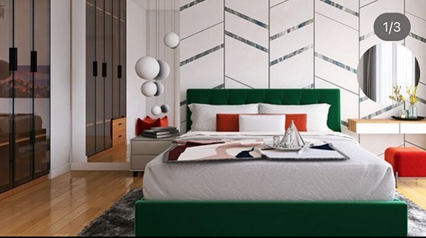
Interior Design
I love designing modern and cozy spaces — it’s my hobby that helps me bring beauty, harmony, and practical value into interiors.
 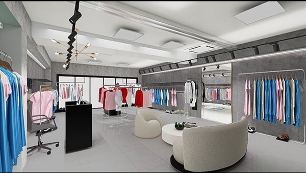
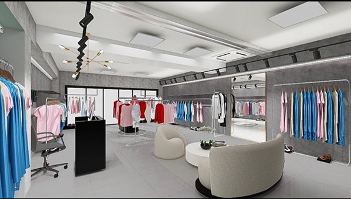
Living Room
Bedroom
Kitchen
Minimalist
3D Visualization
Modern
Exterior
Digital staging
Lighting
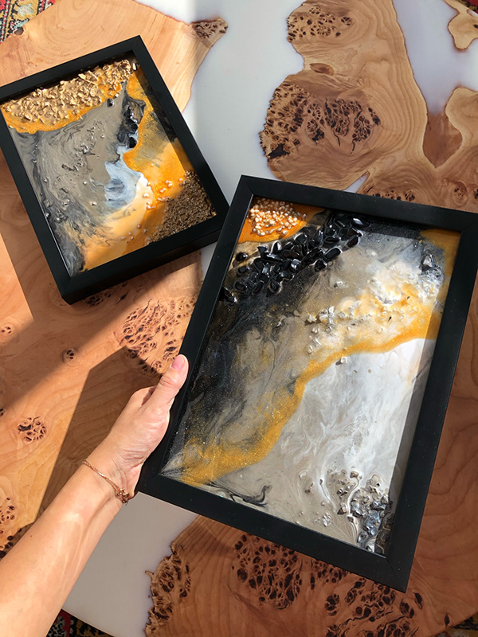
Art
With a background in art school, I’ve stayed connected to painting throughout my life. I’ve created numerous works tailored for modern interiors, adding character and harmony to any space.
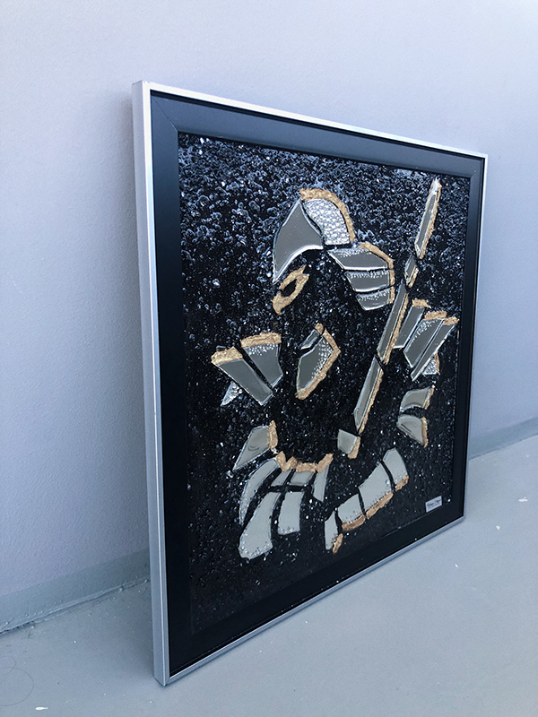
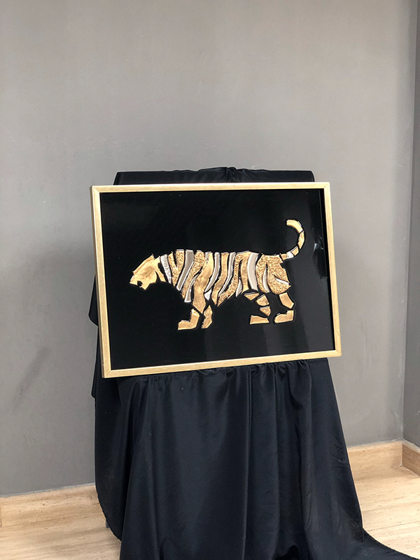
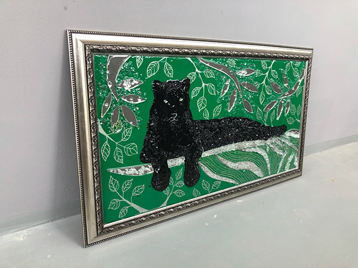
Sketch
Resin art
Acrylic
Creativity
Oil
Canvas
Technique
Color
Style
Books
I love reading — it helps me reflect, grow, and discover new ideas. Favorites: utopia, sci-fi, and non-fiction.
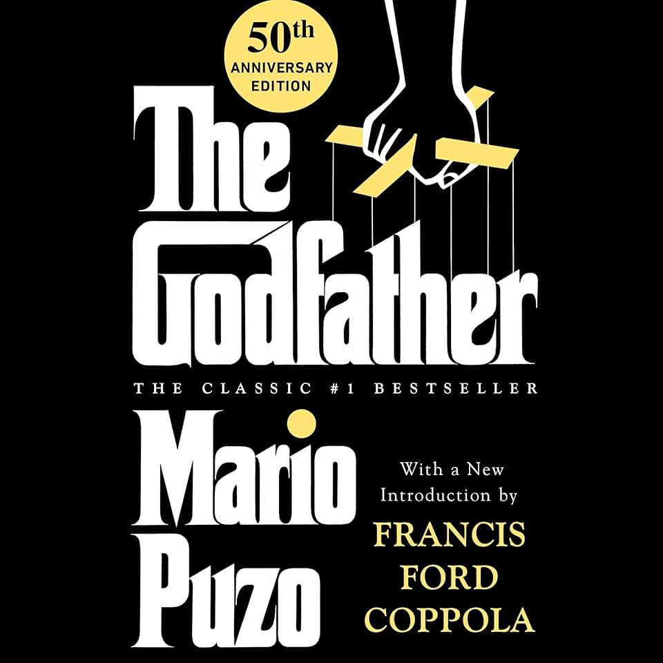
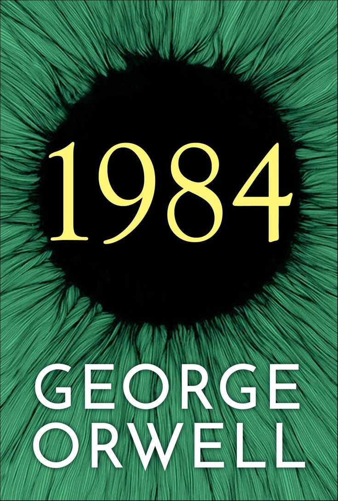

Fiction
Non-Fiction
History
Classics
Bestsellers
Travel
Mystery
Science
Inspiration
Florist
For several years, I ran my own flower shop, and over time, I turned this experience into a passionate hobby.
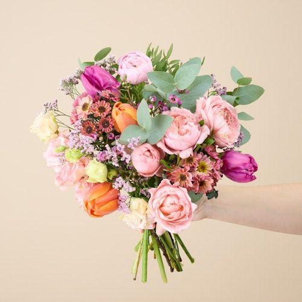
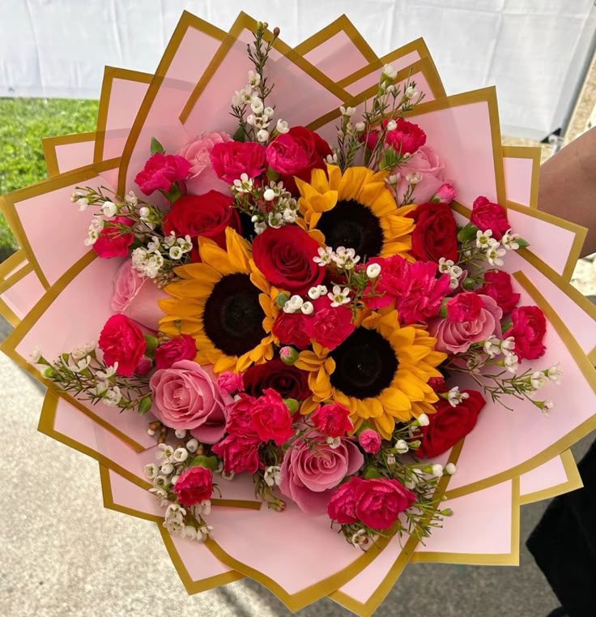
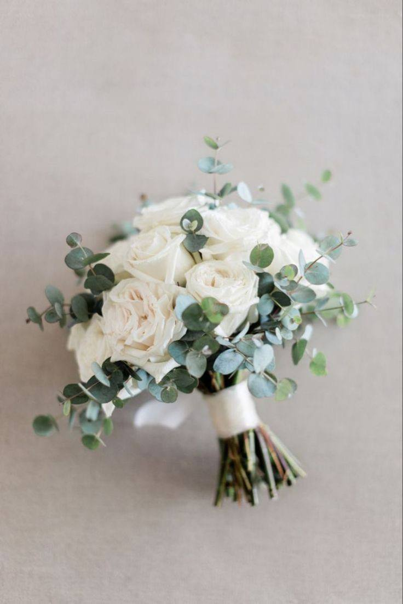
Bouquets
Arrangements
Centerpieces
Seasonal Flowers
Color Palettes
Textures
Greenery
Dried Flowers
Floristry Style